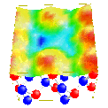

Defects on GaAs Surfaces
(Please click on any figure to see a full-size version.)


In order to determine the structural properties of defects on semiconductor
surfaces using STM, it is crucial to properly interpret the STM
images using, for example, state-of-art first principles calculations.
The case considered here in the above figures (click on small figures
above to see full-size versions)
is As vacancies on the GaAs(110) surface.
STM images were
generated using ab-initio wavefunctions and supercells, which probe
the isosurface of the wavefunctions squared over a given energy window. The
two figures here were calculated with a negative sample bias of about 2 eV to
reveal states associated with surface As atoms. They show, on the appearance,
that surface As atoms near the vacancy are displaced towards the underlying
bulk. In calculations with large enough surface supercells (see the 2nd figure),
significant As displacements in the STM images due to As vacancy were found
while in fact the vacancy causes little As atomic motion. Discrepancies between
the actual atomic positions and those inferred from the STM images for Ga atoms
are even more pronounced. A detailed analysis explaining this paradox is the
subject of the reference below.
Selected References
-
S. B. Zhang and A. Zunger, Phys. Rev. Lett., 77, 119 (1996).
For more references on related topics, please see the
publications database.
Back to
Solid State Theory Home Page
{kind=link}